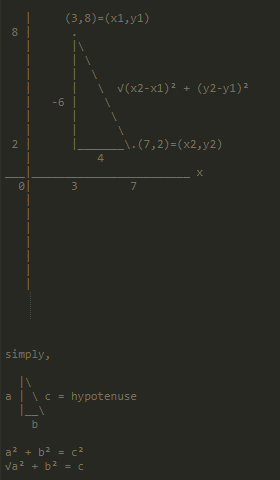

Home Pages:
Informations included in this page:
The call(), apply() and bind() function methods
A simple explanation of JavaScript Iterators
The call(), apply() and bind() function methods
A simple explanation of JavaScript Iterators
With the call() method, you can write a method that can be used on different objects.
In JavaScript all functions are object methods, if a function isn't a method of a JavaScript object, it is a function of the global object.
The example below creates an object with 3 properties, firstName, lastName and fullName.
JavaScript Code:
let person = { firstName: "Alex", lastName: "Gkiafis", fullName: function(){ return `${this.firstName} ${this.lastName}`; } } document.write( person.fullName() );
Outcome:
The call() method is a predefined JavaScript method, it can be used to invoke (call) a method with an owner object as an argument (parameter).
Let's make a person2 for example, and use fullName method of person to person2:
JavaScript Code:
let person = { firstName: "Alex", lastName: "Gkiafis", fullName: function(){ return `${this.firstName} ${this.lastName}`; } } let person2 = { firstName: "Christina", lastName: "Classified" } document.write( person.fullName.call(person2) );
Outcome:
The call() method can also accept arguments:
JavaScript Code:
let person = { firstName: "Alex", lastName: "Gkiafis", fullName: function(a, b, ...c){ let fullname = `${this.firstName} ${this.lastName}, ${a}, ${b}`; let arr = []; for( let i of c){ arr.push( `, ${i}` ) } let extra_arguments = arr.join(''); return fullname + extra_arguments + "."; } } let person2 = { firstName: "Christina", lastName: "Classified" } document.write( person.fullName.call(person2, "pizza", "cat", "videgames", "anime", "etc") );
Outcome:
So, let's play around with call() method a little more:
JavaScript Code:
// this references the object the function belongs to let example = function(name, age){ document.write(name + age + this) } // this will reference the global object example("Alex ", 15); let person = { example: "example" } // this will reference the person object example.call(person, "<br> Chrisina ", 18);
Outcome:
The apply() method works in a similar way to the call() method, the only difference is the way these two methods can take extra arguments, while with call() we could simple add the arguments after the first parameter which is used to pick an object, the apply() method only takes arguments as an array..
JavaScript Code:
let person = { firstName: "Alex", lastName: "Gkiafis", fullName: function(){ let fullname = `${this.firstName} ${this.lastName}`; let arr = [] for( let i of arguments){ arr.push(`, ${i}`); } let extra_arguments = arr.join(''); return fullname + extra_arguments + "."; } } let person2 = { firstName: "Pewdie", lastName: "Pie" } document.write( person.fullName.apply(person2, ["pizza", "cats", "videogames", "animes"]) );
Outcome:
This little difference may seem useless, but it can come very handy when you want to use an array for your argument list. For example, do you remember the math object? We can use it's math method on an array to get the highest number of the array:
If we did that like this, it wouldn't work:
JavaScript Code:
let arr = [1, 2, 3] document.write( Math.max(arr) );
Outcome:
If however we used the apply() method to use the max method of the Math object on a null object (null represents nothing, so we basically skip whe first parameter) we can add arguments to the max method as an array:
JavaScript Code:
let arr = [1, 2, 3] document.write( Math.max.apply(null, arr) );
Outcome:
The bind method is pretty similar to call method, however, instead of calling the function inside a specified object it creates a copy of the function inside a specified object, here is an example:
JavaScript Code:
function example(name, age){ document.write(name + age + this + "<br>"); } let obj = {}; example.bind(obj, "Alex "); // this does nothing let example2 = example.bind(obj, "Christina ", 18); // this creates the copy example2(); // this calls the copy let example3 = example.bind(obj); // if you create the copy like this example3("Jerry ", 15) // then you can add arguments later like that let example4 = example.bind(obj, "Jonathan"); // if you only added the first argument example4(19); // then you would only be able to define the second argument later
Outcome:
The concat() method is used to join two or more arrays, This method does not change the existing arrays, but returns a new array, containing the values of the joined arrays, see example below:
JavaScript Code:
let arr1 = [1, 2]; let arr2 = [3, 4]; let arr3 = [2, 1]; document.write( arr1.concat(arr2, arr3) );
Outcome:
The splice() method adds/removes items to/from an array. The first parameter is required and it specifies at what position to add/remove items, the second parameter is optional and it specifies the number of items to be removed, if set to 0 no items will be removed, all other parameters are the items you want to add.
JavaScript Code:
arr = ["One", "Test", "Five"]; arr.splice(1, 1, "Two", "Three", "Four"); document.write( arr );
Outcome:
In the example above, I chose the position 1, and chose to remove 1 item, so "Test" item, which was at the position 1 was removed and then the items I wanted were added. If I changed the second parameter to 2 then the "Five" item would be removed too, if I changed it to 0, no items would be removed, like this:
JavaScript Code:
arr = ["One", "Test", "Five"]; arr.splice(1, 0, "Two", "Three", "Four"); document.write( arr );
Outcome:
The spread operator is similar to the Rest Parameter I talked about earlier, but it has another purpose when used in objects or arrays or function calls (arguments).
So, if you wanted to pass the elements of an array as arguments to a function, how would you do this? Before ES6, we would use the apply method, which let's us add arguments as arrays, I talked about the apply() method before, here is an example:
JavaScript Code:
function example(a,b,c,d){ return a + b + c + d; } let arr = ["1", "2", "3", "4"]; document.write( example.apply(null, arr) );
Outcome:
If I had simple wrote example(arr) the array would be assigned to only the first argument of the function, and all the other arguments would be empty.
ES6 provides an easier way to do the example above with spread operators:
JavaScript Code:
let example = function(a,b,c,d){ return a + b + c + d; } let arr = ["1", "2", "3"]; document.write( example(...arr, "4") );
Outcome:
Before ES6, we used the following syntax to add an item at the middle of an array:
JavaScript Code:
var arr = ["One", "Two", "Five"]; arr.splice(2, 0, "Three", "Four"); document.write( arr );
Outcome:
You can use methods such as push, splice, and concat, for example, to achieve this in different positions of the array, however, in ES6 the spread operator lets us do this more easily like this:
JavaScript Code:
let newArr = ["Three", "Four"]; let arr = ["One", "Two", ...newArr, "Five"]; document.write( arr );
Outcome:
In objects it copies the own enumerable properties from the provided object onto a new object:
JavaScript Code:
let obj1 = { name: "Alex", x: 5 }; let obj2 = { name: "Christina", y: 10 }; let clonedObj = {...obj1}; // { name: "Alex", x: 5 } let mergedObj = {...obj1, ...obj2}; // { name: "Christina", x: 5, y: 10 } document.write( `${clonedObj.name} ${mergedObj.name} ${mergedObj.x}` );
Outcome:
However, if you try to merge the two objects in an array like in the example below, it won't work:
JavaScript Code:
let obj1 = { name: "Alex", x: 5 }; let obj2 = { name: " Christina", y: 10 }; function merge(...arr){ return {...arr}; } let mergedObj = merge(obj1, obj2); // {{ name: "Alex", x: 5 }, { name: "Christina", y: 10 }} document.write( mergedObj.name );
Outcome:
Shallow cloning or merging objects is possible with another operator called Object.assign(), I talked about it before when I talked about ES6 Objects.
JavaScript Code:
let obj1 = { name: "Alex", x: 5 }; let obj2 = { name: " Christina", y: 10 }; function merge(...arr){ return Object.assign({}, ...arr); } let mergedObj = merge(obj1, obj2); // {{ name: "Alex", x: 5 }, { name: "Christina", y: 10 }} document.write( mergedObj.name + mergedObj.x );
Outcome:
In this lesson I will explain how to create a class that can be used to create multiple objects of the same structure, just like object constructors.
A class uses the keyword class and contains a constructor method for initializing.
JavaScript Code:
class human{ constructor(n,a){ this.name = n; this.age = a; } } var person1 = new human("Alex", 16); var person2 = new human("Christina", 18); document.write( `Name: ${person1.name}, Age: ${person1.age} <br> Name: ${person2.name}, Age: ${person2.age}` );
Outcome:
Class Declarations are not hoiste while Function Declarations are, if you try to access your class before declaring it, ReferenceError will be returned, if you try the same thing with an object constructor it will work just fine:
JavaScript Code:
// This doesn't work: var person1 = new human1("Christina", 18); document.write( person1.name ); var human1 = class { constructor(n, a) { this.name = n; this.age = a; } }; // This works just fine: var person2 = new human2("Alex", 16); document.write(person2.name); function human2(n,a){ this.name = n; this.age = a; }
Outcome:
The constructor is a special method which is used for creating and initializing an object created with a class. There can only be one constructor in each class.
ES6 introduced a shorthand that does not require the keyword function for a function assigned to a method's name. One type of class method is the prototype method, which is available to objects of the class.
JavaScript Code:
class human { constructor(a, b) { this.firstName = a; this.lastName = b; } mergeNames() { return `${this.firstName} ${this.lastName}` ; } get fullName() { return this.mergeNames(); } } var person = new human("Alex", "Gkiafis"); document.write(person.fullName);
Outcome:
In the code above, mergeNames is a method, and fullName is a getter, the difference between the two is that if you wanted to acces mergeNames you would have to write person.mergeNames(), while when you want to access a getter you simply write person.fullName. A getter must not have any formal parameters or an error will return.
Another type of method is the static method, which can be called through a class instance. Static methods are often used to create utility functions for an application.
JavaScript Code:
let human = class{ constructor(n,a){ this.name = n; this.age = a; } static age_gap(x,y){ let temp; if(x.age > y.age){ temp = x.age - y.age; } else { temp = y.age - x.age }; return `The age gap between ${x.name} and ${y.name} is ${temp} years.`; } } let person1 = new human("Alex", 16); let person2 = new human("Christina", 18); document.write( human.age_gap(person1, person2) );
Outcome:
Try removing the static keyword and this won't work, why is that? Because with static methods we are able to use the method without using it through an object, if we did want to use that method without the static keyword we could write person2.age_gap(person1, person2) instead, that would do work, because we would use the method through the person2 object. Conclusion: The static method can be called directly using the class name without an object.
Let's create a more advanced example now:
JavaScript Code:
class Point { constructor(x, y) { // 7 or 3 , 2 or 8 this.x = x; // 7 or 3 this.y = y; // 2 or 8 } static distance(a, b) { // p1 , p2 const dx = a.x - b.x; // 7 - 3 = 4 const dy = a.y - b.y; // 2 - 8 = -6 return Math.hypot(dx, dy); // √(4)² + (-6)² = √52 = 7.21110255... } } const p1 = new Point(7, 2); const p2 = new Point(3, 8); document.write(Point.distance(p1, p2));
Outcome:
This example uses math rules to calculate the distance between two points, to exaplain it easier I will need you to look at this image first:
So, with the constructor we created the points p1 and p2, to find the distance between the two we should use the hypotenuse formula, but in order to do that we need to find the size of the two sides of the triangle, something that we can easily do, by doing p1.x - p2.x to find the side that's on the x axis and p1.y - p2.x to find the side that's on the y axis. After we have done than we used the Math.hypot method to calculate the third side of the triangle, which is the distance between p1 and p2, the hypotenuse formula is a^2 + b^2 = c^2 which can be changed to √a^2 + b^2 = c which in our example equals 7.211102550927979.
The extends keyword is used in class declarations or class expressions to create a child of a class. The child inherits the properties and methods of the parent.
JavaScript Code:
let animals = class{ constructor(n){ this.name = n; } speak(){ return `${this.name} makes a noise`; } } let dog = class extends animals{ speak(){ return `${this.name} barks`; } } let dog_object = new dog("Dog"); document.write( dog_object.speak() );
Outcome:
As you can see the dog class inherited the name property of the animals class and overwrote the speak method.
If there is a constructor present in the child class, it needs to first call super() before using this, else it won't work, to keep the parent properties and add more, you should do this like this:
JavaScript Code:
let animals = class{ constructor(n, a){ this.name = n; this.age = a; } } let dog = class extends animals{ constructor(n, c, a){ super(n, a) this.color = c; } } let dog_object = new dog("Bella", "brown", 3); document.write( dog_object.name );
Outcome:
In the super() method you should add the two constructor parameters, they don't have to be named the same with the ones in animals class, they can be different, the first parameter will be assigned to name property and second parameter to age property, no matter the names you have chose, if you only add the super() method without any parameters the first two constructor parameters will simple by undefined, and only the third parameter will be assigned to a property. Why does it work like this? I guess it is because to merge the two constructors we should redefine in which order the parameters should be.
Also, the super keyword can be used to call parent's methods, like in the example below:
JavaScript Code:
let animals = class{ constructor(n){ this.name = n; } speak(){ document.write( `${this.name} makes a noise ` ); } } let dog = class extends animals{ speak(){ super.speak(); document.write( `${this.name} barks` ); } } let dog_object = new dog("Dog"); dog_object.speak()
Outcome:
A collection is a data structure that contains elements. For example, a string is a collection of characters and an array is a collection of ordered items:
JavaScript Code:
var message = 'Hi!'; // consists of 'H', 'i' and '!' var numbers = [1, 3, 4] // consists of 1, 3 and 4
To easily access elements of collections of different structure, JavaScript implements a special pattern named iteterator.
In this lesson, as a part of the iterator pattern, you'll learn what are iterables and iterators. You'll also learn about iterables consumers: how to iterate over a collection using for...of cycle, transform any iterable to an array using the spread operator [...iterable], and more.
Let's not jump right in the dry theory of iterators, because they do are pretty confusing at first sign, on the contrary, let's start with a warm-up eample to dig up the concept of iterable.
Let's try to simply print each item of an array using the for...of loop we learned in previous lessons.
JavaScript Code:
let numbers = [1, 3, 4]; for( let i of numbers ){ document.write( i ); }
Outcome:
As expected, the for...of loop printed each item of numbers array, good.
Now, let's try another experiment, can for...of enumerate each property of an object?
JavaScript Code:
let person = { name: "Alex", age: 16 } for( let i of person ){ document.write( i ); }
Outcome:
This code throws an error saying person is not iterable. The for...of cyrcle requires an iterable collection to iterate over it's items.
So, to find out wheter a data structure is iterable or not you can simply try to iterate it using for...of loop. Having this warm-up experiment, let's state stricter what an iterable is in the next section.
"An object is iterable when it conforms to iterable interface."
The iterable interface requires the object to contain a method Symbol.iterator that must return an iterator object.
JavaScript Code:
interface Iterable { [Symbol.iterator]() { //... return Iterator; } }
In simple words, any object is iterable (iter + able meaning able to be iterated) if it contains a method named Symbol.iterator (symbols can also define methods) that returns an iterator.
"The iterator object must conform to iterator interface."
The iterator object must have a method next() that returns an object with properties done (a boolean indicating the end of iteration) and value (the item extracted from the collection at the iteration).
JavaScript Code:
interface Iterator { next() { //... return { value: <value>, done: <boolean>, }; }; }
I know these theoretical terms are confusing, but stay with me.
You know from the warm-up experiment that arrays are iterable. But how does exactly the array conform to the iterable interface?
JavaScript Code:
let numbers = [1, 3, 4]; document.write( numbers[Symbol.iterator]() );
Outcome:
Invoking the expression numbers[Symbol.iterator]() shows that the array instance contains the special method Symbol.iterator. This makes the array conform to the iterable interface.
The numbers[Symbol.iterator]() method must return the iterator object.
The iterator object is the one that performs the iteration over the array items. Just call iterator.next() to access each item of the array.
JavaScript Code:
let numbers = [1, 3, 4]; let iterator = numbers[Symbol.iterator](); document.write( iterator.next().value, // => {value: 1, done: false} iterator.next().value, // => {value: 3, done: false} iterator.next().value, // => {value: 4, done: false} iterator.next().value); // => {value: undefined, done: true}
Outcome:
Each invocation of iterator.next() returns an object { value: <item>, done: <boolean> }.
The value property contains the iterated item, while done indicates whether the iteration is complete.
When there are no more items to iterate, iterator.next() returns { value: underfined, done: true }.
JavaScript provides a good set of cyrcles, syntaxes, and functions that consume iterables
As you know already, for...of cycle accepts an iterable object and iterates through it's items.
JavaScript Code:
let message = 'Hi!'; for( let i of message ){ document.write(i); }
Outcome:
In the above example, message is a string type that is an iterable. for...of cycle iterates over the characters in the string.
Another great consumer of iterables is the spread operator [...iterable]:
JavaScript Code:
let message = 'Hi!'; let chars = [...message]; document.write(chars);
Outcome:
The spread operator [...message] iterates over the characters of the string and creates an array of these characters.
The array destructuring syntax can destructure iterables too.
JavaScript Code:
let message = 'Hi!'; let [firstChar, ...restChars] = message; document.write( restChars );
Outcome:
[firstChar, restChars] = message is a destructuring assignment that destructures the iterable string message.
firstChar is assigned with the first character, the rest characters are stored into the array restChars.
Array.from(iterable[, mapFunction]) also accepts an iterable and transforms it into an array:
JavaScript Code:
let message = 'Hi!'; let chars = Array.from(message); document.write( chars );
Outcome:
Iterables are collections that can be iterated. To be an iterable, the object must conform the iterable interface.
Iterable consumers are language constructs that consume iterables. for...of cycle is an iterable consumer that cycles over each item of the iterable, spread operator [...iterable] creates an array from the iterable's items.
What makes the iterator pattern so useful is that any iterable can be used by any iterable consumer.
A Map object can be used to hold key/value pairs. A key or value in a map can be anything (objects and promitive values).
The syntax new Map([iterable]) creates a map object where iterable is an array or any other iterable object whose elements are arrays (with key/value pair each).
An object is similar to Map but there are important differences that make using a Map preferable in certain cases:
The size property returns the number of key/value pairs in a map.
JavaScript Code:
let map = new Map([['k1', 'v1'], ['k2', 'v2']]); document.write( map.size );
Outcome:
Now, to play around a little more with Map, we are gonna need to use the following methods:
JavaScript Code:
let map = new Map(); map.set("k1", "v1").set("k2", "v2"); document.write( `${map.get("k1")} <br> ${map.has("k3")}` );
Outcome:
Let's try to create an iterator of the keys now:
JavaScript Code:
let map = new Map(); map.set("k1", "v1").set("k2", "v2"); let itr = map.keys(); do { var obj = itr.next() if( obj.done == true){ break; } document.write( obj.value ); } while ( obj.done == false );
Outcome:
I used do...while loop because I wanted the code block to be executed once before the while gets checked, otherwise the obj variable wouldn't yet be created, also, I used break keyword to break the code block after done property returns true so that undefined isn't written at the final run.
The same thing could be done using the for...of loop way easier:
JavaScript Code:
if(true){ let map = new Map(); map.set('k1', 'v1').set('k2', 'v2'); for (let key of map.keys()) document.write(key); }
Outcome:
Let's try entries() method now which returns an iterator in which if we use the next() method this object will be returned: {value: ["k1", "v1"], done: false}, it works just like before when I use keys() method but the value this time returns an array.
JavaScript Code:
let map = new Map(); map.set("k1", "v1").set("k2", "v2"); let itr = map.entries(); do { var obj = itr.next() if( obj.done == true){ break; } document.write( `${obj.value[0]} : ${obj.value[1]} <br>` ); } while ( obj.done == false );
Outcome:
This can of course be shorten with the help of for...of loop like this:
JavaScript Code:
let map = new Map(); map.set("k1", "v1").set("k2", "v2"); for( let kv of map.entries() ){ document.write( `${kv[0]} : ${kv[1]} <br>` ) }
Outcome:
A Set object can be used to hold unique values (no repititions are allowed). A value in a set can be anything (objects and privitive values).
The syntax new Set([iterable]) creates a Set object where iterable is an array or any other iterable object of values.
The size property returns the number of distinct values in a set:
JavaScript Code:
let set = new Set([1, 1, 2, 2, 3, 3, "Alex", "Alex"]); document.write(set.size);
Outcome:
As you can see it returned 4 even though the elements are 8, that happened because elements that share the same name count as one.
JavaScript Code:
let set = new Set(); set.add(3).add(9).add(16).add(1); document.write( set.has(3) + "<br>" ); set.delete(3); document.write( set.has(3) + "<br>" ); for( let x of set.values() ){ document.write(x); }
Outcome:
The setTimeout() method calls a function or evaluates an expression after a specified number of milliseconds. The function is only executed once, if you need to repeat execution you can use the setInterval() method, I talked about this method in a previous lesson.
To prevent the function from running you should use the clearTimeout() method, a method similar to clearInterval().
The syntax is like this: setTimeout(function, milliseconds, param1, param2, ...). The function is required, milliseconds are optional, if not ommited the value is set to 0, other extra parameters are also optional and are passed to the function parameters.
HTML Code:
<p id="container1"><button id="button1" >Click</button></p>
JavaScript Code:
function write(x){ let text = document.createTextNode(x); document.getElementById("container1").appendChild(text); } function button_click(){ setTimeout(write, 3000, "Hello World! "); } document.getElementById("button1").addEventListener("click", button_click);
Outcome:
As you can see, if you press the button, after three seconds the text "Hello World!" will appear.
JavaScript Code:
var paragraph = document.getElementById("container2"); let start = function(){ timeout = setTimeout(one, 2000); } let one = function(){ let text = document.createTextNode(2); paragraph.appendChild(text); timeout = setTimeout(two, 2000); } let two = function(){ let text = document.createTextNode(4); paragraph.appendChild(text); timeout = setTimeout(three, 2000); } let three = function(){ let text = document.createTextNode(6); paragraph.appendChild(text); } let end = function(){ clearTimeout(timeout); } document.getElementById("start1").addEventListener("click", start); document.getElementById("stop1").addEventListener("click", end);
Outcome:
The example above was made to demonstrate how clearTimeout() method can be used, to do something like I did in the example above however it is recommended to use setInterval() method instead since it allows you to way easier do this:
JavaScript Code:
let paragraph = document.getElementById("container3"); let num = 0; let counter = function(){ let text = document.createTextNode(num++); paragraph.appendChild(text); } let start = function(){ interval = setInterval(counter, 2000); } let end = function(){ clearInterval(interval); } document.getElementById("start2").addEventListener("click", start); document.getElementById("stop2").addEventListener("click", end);
Outcome:
In this lesson I wanna talk about function callbacks, so that I can later easier introduce you to promises which work really similar to the way function callbacks work, but better.
Function callbacks are in simple words, functions used as parameters in other functions, see this code for example:
JavaScript Code:
let num = 1; let example = (x, y) => { if( num == 1){ x("Num", num); } else { y("Num", num); } } let parameter1 = (a, b) => { document.write( `${a} is ${b}` ); } let parameter2 = (a, b) =>{ document.write( `${a} is not ${b}` ); } example(parameter1, parameter2);
Outcome:
So, I think the way the code works is pretty clear, where x is called parameter1 function is called, so where it writes x("Num", num); it's like if it wrote parameter1("Num",num);, it works pretty simple, however, if you nest it a lot it starts to get ugly and complicated.
A JavaScript promise object contains both the producing code and calls to the consuming code:
JavaScript Code:
let myPromise = new Promise( function(myResolve, myReject){ // "Producing Code" (May take some time) myResolve(); // when successful myReject(); // when error }); // "Consuming Code" (Must wait for a fulfilled promise) myPromise.then( function(value) { /* code if successful */ }, function(error) { /* code if error */ } );
When the executing code obtains the result, it should call one of the two callbacks:
| Result | Call |
|---|---|
| Success | myResolve(result value) |
| Error | myReject(error object) |
A JavaScript Promise Object can be:
The Promise Object supports two properties: state and result.
While a Promise Object is "pending" (working), the result is undefined. When it is "fulfilled", the result is a value. When it is "rejected", the result is an error object.
| myPromise.state | myPromise.result |
|---|---|
| "pending" | undefined |
| "fulfilled" | a result value |
| "rejected" | an error object |
You cannot access the Promise properties state and result. You must use Promise methods to handle promises.
Here is how to use a Promise:
JavaScript Code:
myPromise.then( function(value) { /* code if successful */ }, function(error) { /* code if some error */ } );
Promise.then() method takes two arguments, a callback for success and another for failure. Both are optional, so you can add a callback for success or failure only.
JavaScript Code:
function example(myResolve, myReject){ let x = 0; if( x == 0){ myResolve(); } else { myReject()} } let myPromise = new Promise(example); myPromise.then( function(){ document.write( "Success" ); }, function(){ document.write( "Error"); } );
Outcome:
In the example above, if x isn't 0 then myResolve() is called, which means the code was successful, so the first function inside the myPromise.then() method is executed, if x was not 0 then myReject() would be called, which would reject the code, so the second function inside the myPromise.then() method would be executed.
Here is one more example:
JavaScript Code:
let uses_tiktok = false; let is_simp = true; let example = (resolve,reject) =>{ if( uses_tiktok ){ reject({ error: "use tiktok", message: "stop using tiktok" }) } else if ( is_simp){ reject({ error: "are a simp", message: "stop being a simp" }) } else { resolve("You are cool!") } } let promise = new Promise(example); promise.then((message) => { document.write(message) }).catch((obj) =>{ document.write(`You ${obj.error} please ${obj.message}.`) })
Outcome:
Feel confused? The code is actually pretty simple, it works similarly to how function calls I talked about before work, the promise.then() method returns a function to the first parameter of the promise, and the promise.catch() returns a function to the second parameter of the promise, we could had simple used a second parameter to promise.then method, however I wanted to include the catch method too in the lesson, which basically returns a function to the second parameter of our promise, which parameter is used when our promise fails, to easily remember it, just think of it like this: the catch method catches any errors and returns a function.
Let me now talk about Promise.all([]) method, which can take an array of promises and runs them all at the same time only after they are all completed, like in the example below:
JavaScript Code:
let recordVideoOne = new Promise((resolve) => resolve("Video 1 recorded")); let recordVideoTwo = new Promise((resolve) => resolve("Video 2 recorded")); let recordVideoThree = new Promise((resolve) => resolve("Video 3 recorded")); Promise.all([ recordVideoOne, recordVideoTwo, recordVideoThree ]).then((message) => document.write(message))
Outcome:
Lastly, I wanna mention to Promise.race method, which works the same way Promise.all method works, however, it only waits for the first promise to complete, therefore, it only runs one promise and doesn't wait for the rest.
JavaScript Code:
let recordVideoOne = new Promise((resolve) => resolve("Video 1 recorded")); let recordVideoTwo = new Promise((resolve) => resolve("Video 2 recorded")); let recordVideoThree = new Promise((resolve) => resolve("Video 3 recorded")); Promise.race([ recordVideoOne, recordVideoTwo, recordVideoThree ]).then((message) => document.write(message))
Outcome:
So, in this lesson I wanna talk some more about function callbacks and promises, because they do are a little hard to gasp, and I want to feel confortable using them before I move on, I watched some youtube videos which I will link at the end of the section, let's get started.
Let's start with the basics, what's synchronous and what's asynchronous programming? Synchronous programming is read from the top to the bottom one by one, like this:
JavaScript Code:
document.write("Start "); document.write("Middle "); document.write("End");
Outcome:
Asynchronous code also runs from the top to the bottom, however, during this run, it runs through certain asyncrhonous functions and split off to execute that asynchronous code seperately from the rest of the code. Here is an example of an asynchronous code:
HTML Code:
<p id="container10"></p>
JavaScript Code:
let container = document.getElementById("container10"); setTimeout(() => { let text = document.createTextNode("Sync"); container.appendChild(text); }, 1); let text = document.createTextNode("Start "); container.appendChild(text); let text2 = document.createTextNode("End "); container.appendChild(text2);
Outcome:
Let me give you an example of when asynchronous code could be used, let's say I wanna make an object of a user in my site, which will have an email and a password, the user data could be create at any time, so if I were to try to do what I want using synchronous code I would get an error:
JavaScript Code:
let registerUser = (email, password) => { setTimeout( () => { return {user_email: email, user_password: password} }, 3000) } let userInfo = registerUser("alex@gmail.com", 1234); document.write(userInfo);
Outcome:
That's because the object is returned after it is referenced, anyway, to fix that, we could use function callbacks.
HTML Code:
<p id="container11"></p>
JavaScript Code:
let container = document.getElementById("container11"); let registerUser = (email, password, callback) => { setTimeout( () => { callback({user_email: email, user_password: password}); }, 3000) } let userInfo = registerUser("alex@gmail.com", 1234, user => { container.innerHTML = `User_email: ${user.user_email} <br> User_password: ${user.user_password}`; });
Outcome:
Now, if I wanted to create another function and make it execute 2 seconds after registerUser function is executed, I would have to nest it like this:
HTML Code:
<p id="container12"></p>
JavaScript Code:
let container = document.getElementById("container12"); let registerUser = (email, password, callback) => { setTimeout( () => { callback({user_email: email, user_password: password}); }, 3000) } let getVideos = (callback) => { setTimeout(() => { callback(['video1', 'video2', 'video3']); }, 2000); } let userInfo = registerUser("alex@gmail.com", 1234, user => { container.innerHTML = `User_email: ${user.user_email} <br> User_password: ${user.user_password}`; getVideos( videos => {container.innerHTML += `<br> ${videos}` }); });
Outcome:
Let's nest it even more, and include a videoDetails function, which will execute 2 seconds after the getVideos function:
HTML Code:
<p id="container13"></p>
JavaScript Code:
let container = document.getElementById("container13"); let registerUser = (email, password, callback) => { setTimeout( () => { callback({user_email: email, user_password: password}); }, 3000) } let getVideos = (callback) => { setTimeout(() => { callback(['video1', 'video2', 'video3']); }, 2000); } let videoDetails = (video, callback) => { setTimeout(() => { callback(`${video} is cool!`) }, 2000) } let userInfo = registerUser("alex@gmail.com", 1234, user => { container.innerHTML = `User_email: ${user.user_email} <br> User_password: ${user.user_password}`; getVideos( videos => { container.innerHTML += `<br> ${videos}` videoDetails(videos[0], (description) => { container.innerHTML += `<br> ${description}`; }); }); });
Outcome:
As you can see, the syntax isn't very pretty, if function callbacks are nested a lot, it gets ugly and hard to read, it's the known function callbacks hell developers talk about, luckily for us, now we ES6, we can use promises to write asynchronous code much better.
HTML Code:
<p id="container14"></p>
JavaScript Code:
let container = document.getElementById("container14"); let registerUser = (email, password) => { return new Promise((resolve, reject) => { setTimeout( () => { resolve({user_email: email, user_password: password}); }, 3000) }) } let getVideos = () => { return new Promise((resolve, reject) => { setTimeout(() => { resolve(['video1', 'video2', 'video3']); }, 2000); }) } let videoDetails = (video) => { return new Promise((resolve, reject) => { setTimeout(() => { resolve(`${video} is cool!`) }, 2000) }) } registerUser("alex@gmail.com", 123) .then((user) => { container.innerHTML = `User_email: ${user.user_email} <br> User_password: ${user.user_password}`; return getVideos(); }).then((videos) => { container.innerHTML += `<br> ${videos}`; return videoDetails(videos[0]) }).then((description) => { container.innerHTML += `<br> ${description}`; })
Outcome:
As you can see, by simply using then we can easily add asynchronous functions one by one without all the complicated syntax.
Now, there is an even cleaner way to write this code using promises, but about that I will speak in the next lesson.
As I said in the lesson above, there is an even better way to use promises, and that's what I'm gonna talk about in this section. This new syntax I'm gonna talk about is pretty useful mainly because it makes referencing parameters between the asynchronous functions easier, see the code I wrote in the lesson above written with the new syntax:
HTML Code:
<p id="container14"></p>
JavaScript Code:
let container = document.getElementById("container15"); let registerUser = (email, password) => { return new Promise((resolve, reject) => { setTimeout( () => { resolve({user_email: email, user_password: password}); }, 3000) }) } let getVideos = () => { return new Promise((resolve, reject) => { setTimeout(() => { resolve(['video1', 'video2', 'video3']); }, 2000); }) } let videoDetails = (video) => { return new Promise((resolve, reject) => { setTimeout(() => { resolve(`${video} is cool!`); }, 2000) }) } async function example(){ var user = await registerUser("alex@gmail.com", 123); container.innerHTML = `User_email: ${user.user_email} <br> User_password: ${user.user_password}`; var videos = await getVideos(); container.innerHTML += `<br> ${videos}`; var description = await videoDetails(videos[0]); container.innerHTML += `<br> ${description}`; } example();
Outcome:
Let me explain now, the async keyword I wrote before the function lets JavaScript know I'm writing asynchronous code, whenever the keyword await is met the function will cease to work, till the function after the keyword is done, only then the code will continue.
Normally, using the other syntax to catch any errors we would use catch() method, but now with that new syntax what do we do? To catch any errors and define how we want the errors to be handled we can use the try and catch code blocks, like this:
HTML Code:
<p id="container14"></p>
JavaScript Code:
let container = document.getElementById("container16"); let registerUser = (email, password) => { return new Promise((resolve, reject) => { setTimeout( () => { resolve({user_email: email, user_password: password}); }, 3000) }) } let getVideos = () => { return new Promise((resolve, reject) => { setTimeout(() => { resolve(['video1', 'video2', 'video3']); }, 2000); }) } let videoDetails = (video) => { return new Promise((resolve, reject) => { if( video == undefined ){ reject("No video was selected"); } else { setTimeout(() => { resolve(`${video} is cool!`); }, 2000) } }) } async function example(){ try{ let user = await registerUser("alex@gmail.com", 123); container.innerHTML = `User_email: ${user.user_email} <br> User_password: ${user.user_password}`; let videos = await getVideos(); container.innerHTML += `<br> ${videos}`; let description = await videoDetails(); container.innerHTML += `<br> ${description}`; } catch(err) { container.innerHTML += `<br> ${err}` } } example();
Outcome: